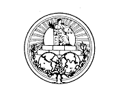

Lynx
Stop Violence Against Women Child Health Site Free Child Sponsorship Breast Cancer Site Literacy Site |
These sites donate money to charities for every click they get. So go there now again and give another person in the majority world a meal, give a sick child dying from a preventable disease or give an impoverished woman a free breast cancer screening. A moment for you, a real positive difference in someone else life. |
|  | We need global institutions to face global problems. Tyrants and powerful militaristic states who profit from anarchy in the world community would like to see organisations like the International Court of Justice fail. Those of us who believe that the world community needs justice so that it can be a mechanism for the upliftment of all peoples should support such an organisation. They have full listings of their cases and details of their judgements, some dry but interesting international politics here! |
| Through PeaceNet, take action for positive social change in the areas of peace, social and economic justice, human rights and the struggle against racism. |